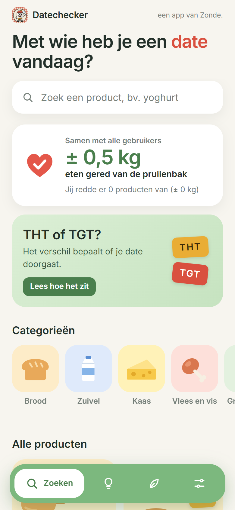
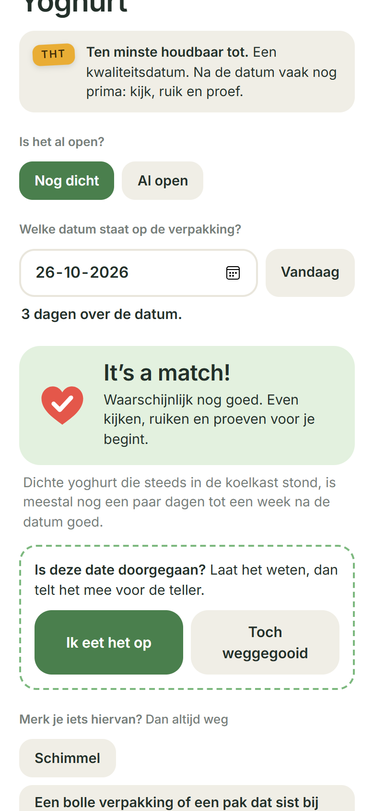
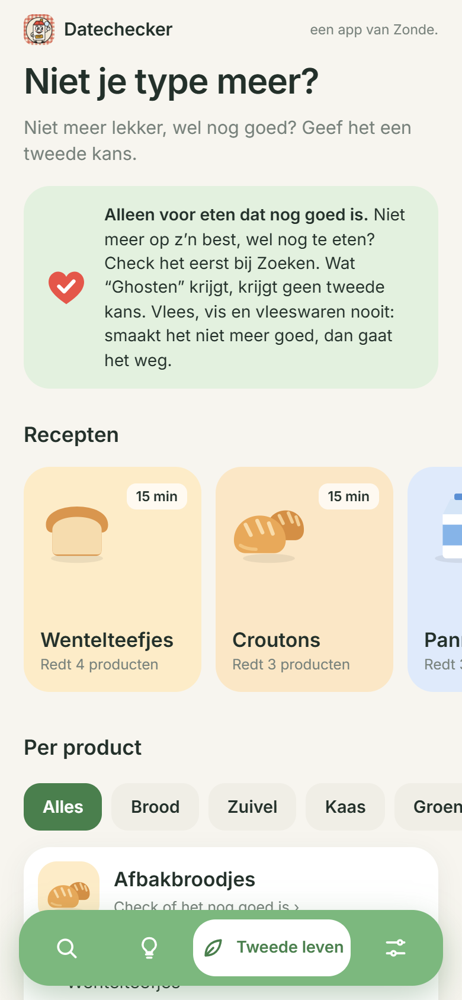

Het doel
Eet wat je hebt.
Veel eten belandt in de prullenbak omdat de datum voorbij is, terwijl het nog prima is. Zonde.
Datechecker legt uit wat het verschil is tussen THT en TGT, en hoe lang een product na de datum meestal nog goed is: dicht of open, in de koelkast of de vriezer. Je krijgt een eerlijk advies, met waar je op let. En is het niet meer op z'n best? Dan krijg je ideeën om het een tweede leven te geven.
Gered!
… kg
eten hebben alle gebruikers samen al gered met Datechecker
Telt live mee, helemaal anoniem. Elke keer dat iemand "Ik eet het op" tikt, gaat hij omhoog.
Zo ziet het eruit



Wat het allemaal kan
- 1Ruim 45 productgroepenVan brood en kaas tot restjes en diepvries. Je zoekt op wat je in je hand hebt.
- 2THT of TGT?Het verschil bepaalt of je date doorgaat. De app legt het simpel uit.
- 3Kijk, ruik, proefPer product waar je op let, en wanneer iets altijd weg moet.
- 4Tweede levenWentelteefjes van oud brood, croutons, frittata en meer.
- 5Dating tipsElke dag een tip om je eten langer goed te houden.
- 6Betrouwbare bronnenTermijnen van het Voedingscentrum en andere bronnen. Bij twijfel kiest de app altijd de voorzichtige kant.
Gratis
Hoe wil je hem downloaden?
Geen App Store nodig. Je zet Datechecker in een minuut op je beginscherm, en dan werkt hij gewoon als app.